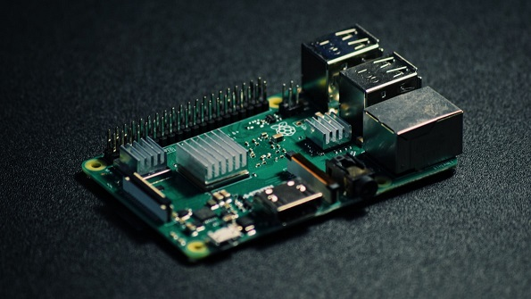
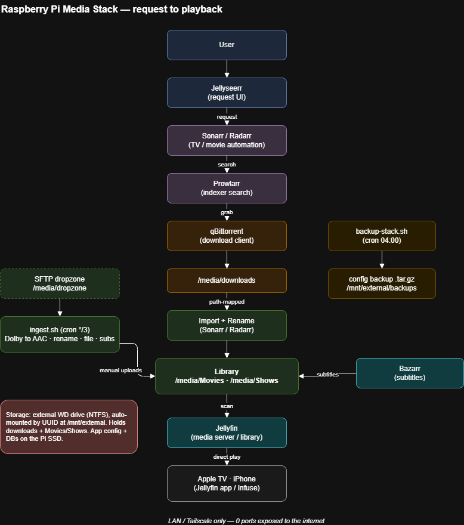

A Self-Hosted Media Server on a Raspberry Pi
The spare storage on my Pi became a proper Jellyfin media server — streaming to Apple TV with direct play, an automated library that organises and subtitles itself, and a custom drop-folder pipeline. The interesting part was the debugging.

My Raspberry Pi home-lab write-up ended with a to-do: "put the 400+ free gigabytes of storage to work as a proper NAS." This is that. The Pi now runs a self-hosted media server — my own library of files, streamed to the TV with artwork, resume/watched state, and subtitles, all served from a drive plugged into a $60 board.
None of the individual pieces are exotic; the write-up-worthy part is what broke. Files that downloaded but never appeared. A whole library invisible for a one-word path typo. Playback that failed for a reason that had nothing to do with the file. Each one looked like a codec problem and turned out to be something else entirely.
What it does
- Streams a personal library — Jellyfin indexes the media folder into a browsable library with posters and metadata, and serves it to the Jellyfin / Infuse apps on Apple TV and iPhone with resume + watched-state sync.
- Direct play, never transcode — the Pi 4 has no usable hardware transcode, so the whole thing is designed around direct play: the client decodes, the Pi just serves bytes. Confirmed via Jellyfin's session view, not assumed.
- Manages its own library — an automation layer (indexer manager + download client + the *arr apps) fetches, renames, and files releases into the right folders in Jellyfin's naming convention, then Bazarr pulls matching subtitles automatically.
- Ingests manual uploads — a custom drop-folder pipeline (below) takes any file I SFTP in and normalises it into the library without me touching a thing.
How it's put together
Seven containers in the existing Compose stack, wired into one request-to-playback pipeline:

| Layer | Tool | Job |
|---|---|---|
| Serve | Jellyfin | Library, metadata, playback to clients |
| Request | Jellyseerr | Front-end that turns a request into a job |
| Automate | Sonarr / Radarr | TV + movie library management, renaming |
| Index | Prowlarr | Source management, feeds the automation apps |
| Fetch | qBittorrent | Download client |
| Subtitle | Bazarr | Automatic subtitle matching + download |
Storage is an external drive auto-mounted by UUID in fstab
(the device node isn't stable across reconnects), with the config/databases kept on the
Pi's SSD and only the large library files on the external disk. Like the rest of the box,
nothing is exposed to the internet — access is LAN and Tailscale only.
Challenges & what I learned
Every symptom in this project pointed at the wrong cause first. The fix each time was to stop guessing and read what the system was actually reporting.
Downloads completed but never showed up
Finished files sat in the download folder and never made it into the library. The logs
were blunt: Import failed, path does not exist or is not accessible. Not a
permissions problem — a path-mapping one. The download client and the
library apps mount the same disk at different in-container paths
(/downloads vs /data), so the path one reported meant nothing
to the other.
Containers don't share your mental filesystem
Two containers looking at the same folder can still disagree on its name. A remote-path
mapping (/downloads/ → /data/downloads/) bridged it, and the same class of
bug existed in a second app for the same reason. The cleaner long-term fix is one shared
mount path everywhere — noted for the next rebuild.
A whole library was invisible over a one-word typo
Episodes were on disk and correctly named, but the TV library was empty in the app. The
scan log gave it away: Failed to enumerate path /media/tv — the library
pointed at /media/tv, which didn't exist. The real folder was
/media/Shows.
"No media found" usually means "wrong path," not "no media"
Repointing the library config (a link file + one XML path) and rescanning brought the entire library back — no restart needed. The data was never missing; the server was looking one letter to the left of it.
Playback failed — and it wasn't the file
Some titles showed but wouldn't play. The obvious suspect was the audio codec. It wasn't: the server was serving a perfectly valid, direct-playable source. The real causes were elsewhere — stale phantom entries from messy manual folders, and a client-side codec paywall — none of which a re-encode would have fixed.
Verify the server before you blame the file
One API call for the playback info proved the source was fine and moved the search client-side in seconds. I nearly transcoded a 4GB file for nothing — the discipline of confirming where the failure actually lives saved hours and a pointless re-encode.
The library kept grabbing 20GB files that never finished
Left on defaults, the automation reached for the highest-quality release it could find — giant files with few sources and multi-day ETAs on a home connection, more than the Pi or the TV needed anyway.
"Best available" is rarely the right default
Capping quality to a sensible 1080p tier — and explicitly excluding the huge lossless variants — dropped grabs from ~20GB to 1–3GB, minutes instead of days, and identical picture quality on the actual screen. Right-sizing beat maximising.
The custom pipeline
Not everything comes through automation — some files I add by hand. Instead of doing the
grunt work each time, a small Bash + FFmpeg pipeline (a cron job over an
SFTP drop folder) handles it: it waits for the upload to finish, converts incompatible
Dolby audio to AAC (copying the video, so it takes seconds not hours), parses the title
and year (or season/episode) from the filename, files it into the library under Jellyfin's
naming scheme, moves any matching subtitle sidecar, and triggers a rescan. Anything it
can't confidently parse is quarantined for me to rename rather than mis-filed silently.
A companion job tars the stack's config nightly — consistent SQLite snapshots, no downtime —
so the whole thing is reproducible from a Git repo plus one archive.
Where things stand
Why this matters
A media server is a friendly cover for a genuinely broad slice of systems work: filesystem mounting and permissions across containers, service-to-service integration over REST APIs, reading SQLite state directly to diagnose a UI that lied, media transcoding with FFmpeg, and automating the whole loop with cron and Bash — then backing it up so it survives a disk. The recurring lesson was the same one good debugging always teaches: the first suspect (the codec, the file, the permissions) is usually innocent, and the log already told you where to look.
Resume line
Built a self-hosted media server on Raspberry Pi / Docker (Jellyfin + automation stack), debugging cross-container path-mapping and library-config failures via logs, SQLite, and REST APIs; wrote a Bash/FFmpeg ingest pipeline that normalises, transcodes, and files uploads automatically, plus nightly config backups — all with zero internet-exposed ports.